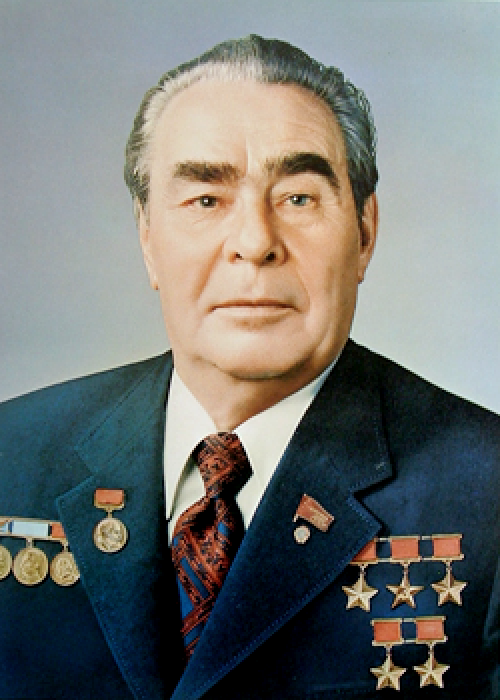

Леонид Брежнев

Леонид Ильич Брежнев (укр. Леонід Ілліч Брежнєв; 6 декабря 1906, по другим данным, 19 декабря 1906, Каменское, Екатеринославская губерния, Российская империя — 10 ноября 1982, Заречье, Московская область, РСФСР, СССР) — советский государственный и партийный деятель, занимавший высшую руководящую должность в КПСС в течение 18 лет (с 1964 и до своей смерти в 1982 году), участник Великой Отечественной войны, участник Парада Победы на Красной площади 24 июня 1945 года (замполит сводного полка 4-го Украинского фронта).
